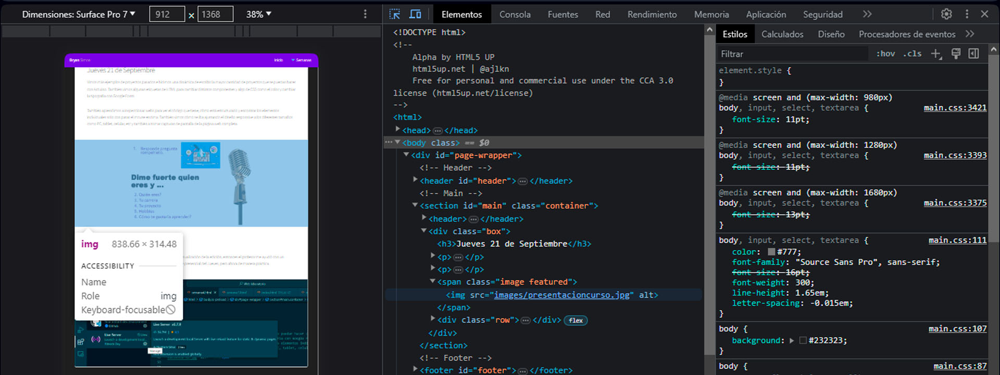

Semana 4
Laboratorio de innovación 2
Jueves 21 de Septiembre
Vimos más ejemplos de proyectos pasados e hicimos una dinámica de escribir la mayor cantidad de proyectos que se puedan hacer con Arduino. También vimos algunas etiquetas de HTML para cambiar distintos componentes y algo de CSS como el color y cambiar la tipografía con Google Fonts.
También aprendimos a inspeccionar webs para ver el código que tiene, cómo está estructurado y encontrar los elementos individuales solo con pasar el mouse encima. También vimos cómo se iba ajustando el diseño responsive a los diferentes tamaños como PC, tablet, celular, etc y también a tomar capturas de pantalla de la página web completa.
Sábado 23 de Septiembre
Cuando entré nuevamente a mi bitácora, no me salía la previsualización de la edición, entonces el profesor me ayudó con un Pluggin. Seguimos viendo algo de CSS al igual que en la clase presencial del Jueves, pero ahora de manera práctica.